특수용접기능사 (2010-01-31 기출문제)
1과목: 용접일반
1. 저수소계 피복 용접봉(E4316)의 피복제의 주성분으로 맞는 것은?
- 석회석
- 산화티탄
- 일미나이트
- 셀룰로오스
(정답률: 68%)

2. 병렬접속저항에서 R1=4[Ω], R2=5[Ω], R3=10[Ω]일 때 합성저항은 약 몇 [Ω]인가?
- 1.8
- 18
- 19
- 1.9
(정답률: 41%)
3. 가스 절단작업에서 절단속도에 영향을 주는 요인과 가장 관계가 먼 것은?
- 모재의 온도
- 산소의 압력
- 아세틸렌 압력
- 산소의 순도
(정답률: 55%)
4. 산소 용기의 윗부분에 각인되어 있지 않은 것은?
- 용기의 중량
- 충전가스의 내용적
- 내압시험 압력
- 최저 충전압력
(정답률: 71%)
5. 탄소 아크 절단에 압축 공기를 병용한 방법은?
- 산소창 절단
- 아크에어 가우징
- 스카핑
- 플라즈마 절단
(정답률: 79%)
6. 교류 아크 용접기의 원격 제어 장치에 대한 설명으로 맞는 것은?(오류 신고가 접수된 문제입니다. 반드시 정답과 해설을 확인하시기 바랍니다.)
- 전류를 조절한다.
- 2차 무부하 전압을 조절한다.
- 전압을 조절한다.
- 전압과 전류를 조절한다.
(정답률: 37%)
7. 각종 금속의 가스 용접시 사용하는 용제들 중 주철 용접에 사용하는 용제들만 짝지어진 것은?
- 붕사-염화리듐
- 탄산나트륨-붕사-중탄산나트륨
- 염화리듐-중탄산나트륨
- 규산칼륨-붕사-중탄산나트륨
(정답률: 54%)
8. 산소-아세틸렌 가스용접에 대한 장점 설명으로 틀린 것은?
- 운반이 편리하다.
- 후판 용접이 용이하다.
- 아크 용접에 비해 유해 광선이 적다.
- 전원 설비가 없는 곳에서도 쉽게 설치할 수 있다.
(정답률: 74%)
9. 피복 아크 용접, TIG 용접처럼 토치의 조작을 손으로 함에 따라 아크 길이를 일정하게 유지하는 것이 곤란한 용접법에 적용되는 특성은?
- 수하특성
- 정전압특성
- 상승특성
- 단락특성
(정답률: 54%)
10. 용접기에서 허용 사용률(%)을 나타내는 식은?
- (정격 2차전류)2/(실제의 용접전류)2×정격사용율
- (실제의 용접전류)2/(정격 2차전류)2×100
- (정격2 차전류)/(실제의 용접전류)×정격사용율
- (실제의 용접전류)/(정격 2차전류)×100
(정답률: 52%)
11. 탄소 전극봉 대신 절단 전용의 특수 피복을 입힌 피복봉을 사용하여 절단하는 방법은?
- 금속분말 절단
- 금속아크 절단
- 전자빔 절단
- 플라스마 절단
(정답률: 67%)
12. 피복 아크 용접에서 차광도의 번호로 많이 사용하는 것은?
- 4~5
- 7~8
- 10~11
- 13~15
(정답률: 68%)
13. 가스 용접봉을 선택할 때 고려할 사항이 아닌 것은?
- 가능한 한 모재와 같은 재질이어야 하며 모재에 충분한 강도를 줄 수 있을 것
- 기계적 성질에 나쁜 영향을 주지 않아야 하며 용융온도가 모재와 동일할 것
- 용접봉의 재질 중에 불순물을 포함하고 있지 않을 것
- 강도를 증가시키기 위하여 탄소함유량이 풍부한 고탄소강을 사용할 것
(정답률: 68%)
14. 연강용 피복 아크 용접봉 중 아래보기와 수평 필릿 자세에 한정되는 용접봉의 종류는?
- E4324
- E4316
- E4303
- E4301
(정답률: 49%)
15. 산소-아세틸렌 용접에서 표준불꽃으로 연강판 두께 2.0㎜를 60분간 용접하였더니 200리터의 아세틸렌가스가 소비되었다면, 가장 적당한 가변압식 팁의 번호는?
- 100번
- 200번
- 300번
- 400번
(정답률: 84%)
16. 용해 아세틸렌 취급시 주의 사항으로 잘못 설명된 것은?
- 저장 장소는 통풍이 잘되어야 한다.
- 저장 장소에는 화기를 가까이 하지 말아야 한다.
- 용기는 아세톤의 유출을 방지하기 위해 눕혀서 보관한다.
- 용기는 진동이나 충격을 가하지 말고 신중히 취급해야 한다.
(정답률: 95%)
17. 피복 아크 용접에서 직류 역극성으로 용접하였을 때 나타나는 현상에 대한 설명으로 가장 적합한 것은?
- 용접봉의 용융속도는 늦고 모재의 용입은 직류정극성보다 깊어진다.
- 용접봉의 용융속도는 빠르고 모재의 용입은 직류정극성보다 얕아진다.
- 용접봉의 용융속도는 극성에 관계없으며 모재의 용입만 직류 정극성보다 얕아진다.
- 용접봉의 용융속도와 모재의 용입은 극성에 관계없이 전류의 세기에 따라 변한다.
(정답률: 75%)
18. 델터메탈(delta metal)에 속하는 것은?
- 7 : 3 황동에 Fe 1~2%를 첨가한 것
- 7:3 황동에 Sn 1~2%를 첨가한 것
- 6:4 황동에 Sn 1~2%를 첨가한 것
- 6:4 황동에 Fe 1~2%를 첨가한 것
(정답률: 44%)
19. 상온가공을 하여도 동소변태를 일으켜 경화되지 않는 재료는?
- 금(Au)
- 주석(Sn)
- 아연(Zn)
- 백금(Pt)
(정답률: 39%)
20. 용접시 용접균열이 발생할 위험성이 가장 높은 재료는?
- 저탄소강
- 중탄소강
- 고탄소강
- 순철
(정답률: 62%)
21. 아연과 그 합금에 대한 설명으로 틀린 것은?
- 조밀육방 격자형이며 청백색으로 연한 금속이다.
- 아연 합금에는 Zn-Al계, Zn-Al-Cu계 및 Zn-Cu계 등이 있다.
- 주조성이 나쁘므로 다이캐스팅용에 사용되지 않는다.
- 주조한 상태의 아연은 인장강도나 연신율이 낮다.
(정답률: 62%)
22. 침탄법의 종류가 아닌 것은?
- 고체 침탄법
- 액체 침탄법
- 가스 침탄법
- 증기 침탄법
(정답률: 72%)
23. 주조용 알루미늄 합금의 종류가 아닌 것은?
- Al-Cu계 합금
- Al-Si계 합금
- 내열용 Al합금
- 내식성 Al합금
(정답률: 42%)
24. 주강에 대한 설명으로 틀린 것은?
- 주철로써는 강도가 부족할 경우에 사용된다.
- 용접에 의한 보수가 용이하다.
- 주철에 비하여 주조시의 수축량이 커서 균열 등이 발생하기 쉽다.
- 주철에 비하여 용융점이 낮다.
(정답률: 53%)
25. 열처리 방법 중 불림의 목적으로 가장 적합한 것은?
- 급냉시켜 재질을 경화시킨다.
- 소재를 일정온도에 가열 후 공냉시켜 표준화한다.
- 담금질된 것에 인성을 부여한다.
- 재질을 강하게 하고 균일하게 한다.
(정답률: 50%)
26. 스테인리스강의 종류가 아닌 것은?
- 오스테나이트계
- 페라이트계
- 퍼얼라이트계
- 마르텐자이트계
(정답률: 57%)
27. 탄소강에 크롬(Cr), 텅스텐(W), 바나듐(V),코발트(Co)등을 첨가하여, 500~600℃ 고온에서도 경도가 저하되지 않고 내마멸성을 크게 한 강은?
- 합금 공구강
- 고속도강
- 초경합금
- 스텔라이트
(정답률: 43%)
28. 가스용접에서 일반적으로 용제를 사용하지 않는 용접 금속은?
- 구리합금
- 주철
- 알루미늄
- 연강
(정답률: 59%)
29. 테르밋 용접의 특징 설명으로 틀린 것은?
- 용접 작업이 단순하고 용접 결과의 재현성이 높다.
- 용접 시간이 짧고 용접 후 변형이 적다.
- 전기가 필요하고 설비비가 비싸다.
- 용접기구가 간단하고 작업장소의 이동이 쉽다.
(정답률: 72%)
30. CO2가스 아크 용접 결함에 있어서 다공성이란 무엇을 의미하는가?
- 질소, 수소, 일산화탄소 등에 의한 기공을 말한다.
- 와이어 선단부에 용적이 붙어 있는 것을 말한다.
- 스패터가 발생하여 비드의 외관에 붙어 있는 것을 말한다.
- 노즐과 모재간 거리가 지나치게 작아서 와이어 송급불량 을 의미한다.
(정답률: 78%)
31. CO2가스 아크 용접에서의 기공과 피트의 발생 원인으로 맞지 않는 것은?
- 탄산가스가 공급되지 않는다.
- 노즐과 모재사이의 거리가 작다.
- 가스노즐에 스패터가 부착되어 있다.
- 모재의 오염, 녹, 페인트가 있다.
(정답률: 63%)
32. 펄스 TIG용접기의 특징 설명으로 틀린 것은?
- 저주파 펄스용접기와 고주파 펄스용접기가 있다.
- 직류용접기에 펄스 발생회로를 추가한다.
- 전극봉의 소모가 많은 것이 단점이다.
- 20A이하의 저 전류에서 아크의 발생이 안정하다.
(정답률: 67%)
33. 용접 이음을 설계할 때의 주의 사항으로 틀린 것은?
- 용접 구조물의 제 특성 문제를 고려한다.
- 강도가 강한 필릿 용접을 많이 하도록 한다.
- 용접성을 고려한 사용재료의 선정 및 열영향 문제를 고려한다.
- 구조상의 노치부를 피한다.
(정답률: 80%)
34. 용접금속에 수소가 잔류하면 헤어크랙의 원인이 된다. 용접시 수소의 흡수가 가장 많은 강은?
- 저탄소 킬드강
- 세미킬드강
- 고탄소림드강
- 림드강
(정답률: 33%)
35. 용접재해 중 전격에 의한 재해 방지대책으로 맞는 것은?
- TIG 용접시 텅스텐 전극봉을 교체할 때는 항상 전원 스위치를 차단하고 교체한다.
- 용접 중 홀더나 용접봉은 맨손으로 취급해도 무방하다.
- 밀폐된 구조물에서는 혼자서 작업하여도 무방하다.
- 절연 홀더의 절연부분이 균열이나 파손되어 있으면 작업이 끝난 후에 보수하거나 교체한다.
(정답률: 69%)
2과목: 용접재료
36. 용접부의 시험과 검사에서 부식시험은 어느 시험법에 속하는가?
- 방사선 시험법
- 기계적 시험법
- 물리적 시험법
- 화학적 시험법
(정답률: 77%)
37. 용접지그를 사용할 때 장점이 아닌 것은?
- 공정수를 절약하므로 능률이 좋다.
- 작업을 쉽게 할 수 있다.
- 제품의 정도가 균일하다.
- 조립하는데 시간이 많이 소요된다.
(정답률: 88%)
38. 용접시험편에서 P=최대하중, D=재료의 지름, A=재료의 최초 단면적일 때, 인장강도를 구하는 식으로 옳은 것은?
- P/πD
- P/A
- P/A2
- A/P
(정답률: 48%)
39. 화재 및 폭발의 방지 조치사항으로 틀린 것은?
- 용접 작업 부근에 점화원을 두지 않는다.
- 인화성 액체의 반응 또는 취급은 폭발 한계범위 이내의 농도로 한다.
- 아세틸렌이나 LP가스 용접시에는 가연성 가스가 누설되지 않도록 한다.
- 대기 중에 가연성 가스를 누설 또는 방출시키지 않는다.
(정답률: 84%)
40. 납땜의 용제가 갖추어야 할 조건이 아닌 것은?
- 모재의 산화 피막과 같은 불순물을 제거하고 유동성이 나쁠 것
- 청정한 금속면의 산화를 방지할 것
- 땜납의 표면장력을 맞추어서 모재와의 친화력을 높일 것
- 용제의 유효온도 범위와 납땜 온도가 일치할 것
(정답률: 75%)
41. 15℃, 1kgf/cm2하에서 사용 전 용해아세틸렌 병의 무게가 50kgf이고, 사용 후 무게가 47kgf일 때 사용한 아세틸렌 양은 몇 리터인가?
- 2915
- 2815
- 3815
- 2715
(정답률: 62%)
42. TIG 용접법에 대한 설명으로 틀린 것은?
- 금속 심선을 전극으로 사용한다.
- 텅스텐을 전극으로 사용한다.
- 아르곤 분위기에서 한다.
- 교류나 직류전원을 사용할 수 있다.
(정답률: 59%)
43. 전기 저항 용접법 중 극히 짧은 지름의 용접물을 접합하는데 사용하고 축전된 직류를 전원으로 사용하며 일명 충돌용접이라고도 하는 용접은?
- 업셋 용접
- 플래시 버트용접
- 퍼커션 용접
- 심 용접
(정답률: 48%)
44. 줄 작업시의 방법 및 안전수칙에 위배되는 사항은?
- 줄 작업은 당길 때 힘을 많이 주어 절삭되도록 한다.
- 줄 작업 전 줄 자루가 단단하게 끼워져 있는가를 확인한다.
- 줄을 해머나 공구용으로 사용하지 않는다.
- 줄눈에 끼인 칩은 와이어 브러쉬로 제거한다.
(정답률: 80%)
45. 용접변형의 교정방법이 아닌 것은?
- 박판에 대한 점 수축법
- 형제에 대한 직선 수축법
- 가열 후 해머링 하는 방법
- 정지구멍을 뚫고 교정하는 방법
(정답률: 57%)
46. 작업장에 따라 작업 특성에 맞는 적당한 조명을 하여야 한다. 보통작업시 조도기준으로 적합한 것은?
- 750Lux이상
- 75Lux이상
- 150Lux이상
- 300Lux이상
(정답률: 55%)
47. 불활성 가스 금속 아크 용접의 특징이 아닌 것은?
- 대체로 모든 금속의 용접이 가능하다.
- 수동 피복 아크 용접에 비해 용착효율이 높아 고능률적이다.
- 전류밀도가 낮아 3㎜이상의 두꺼운 용접에 비능률적이다.
- 아크의 자기제어 기능이 있다.
(정답률: 68%)
48. 플라즈마 아크 용접장치에서 아크 플라스마의 냉각가스로 쓰이는 것은?
- 아르곤과 수소의 혼합가스
- 아르곤과 산소의 혼합가스
- 아르곤과 메탄의 혼합가스
- 아르곤과 프로판의 혼합가스
(정답률: 60%)
49. CO2 가스 아크 용접할 때 전원특성과 아크 안정 제어에 대한 설명 중 틀린 것은?
- CO2 가스 아크 용접기는 일반적으로 직류 정전압 특성이나 상승특성의 용접전원이 사용된다.
- 정전압 특성은 용접전류가 증가할 때 마다 다소 높아지는 특성을 말한다.
- 정전압 특성 전원과 와이어의 송급 방식의 결합에서는 아크의 길이 변동에 따라 전류가 대폭 증가 또는 감소하여도 아크 길이를 일정하게 유지시키는 것을 “전원의 자기 제어 특성에 의한 아크 길이 제어”라 한다.
- 전원의 자기제어 특성에 의한 아크 길이 제어 특성은 솔리드 와이어나 직경이 작은 복합와이어 등을 사용하는 CO2가스 아크 용접기의 적합한 특성이다.
(정답률: 62%)
50. 서브머지드 아크 용접의 용접 조건을 설명한 것 중 맞지 않는 것은?
- 용접전류를 크게 증가시키면 와이어의 용융량과 용입이 크게 증가한다.
- 아크 전압이 증가하면 아크 길이가 길어지고 동시에 비드폭이 넓어지면서 평평한 비드가 형성된다.
- 용착량과 비드 폭은 용접속도의 증가에 거의 비례하여 증가하고 용입도 증가한다.
- 와이어 돌출길이를 길게 하면 와이어의 저항열이 많이 발생하게 된다.
(정답률: 43%)
3과목: 기계제도
51. 그림과 같은 입체도에서 화살표 방향을 정면으로 하여 3각법으로 도시할 때 평면도로 가장 적합한 것은?
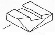
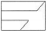
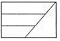
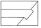
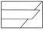
(정답률: 48%)
52. 그림과 같은 용접 도시 기호를 올바르게 설명한 것은?
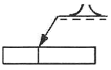
- 돌출된 모서리를 가진 평판 사이의 맞대기 용접이다.
- 평행(I형) 맞대기 용접이다.
- U형 이음으로 맞대기 용접이다.
- J형 이음으로 맞대기 용접이다.
(정답률: 57%)
53. 배관 도시기호 중 체크밸브에 해당하는 것은?
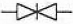
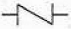
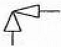
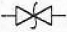
(정답률: 78%)
54. 기계제도에서 선의 굵기가 가는 실선이 아닌 것은?
- 치수선
- 수준면선
- 지사선
- 특수지정선
(정답률: 65%)
55. 그림과 같은 입체도에서 화살표 방향 투상도로 가장 적절한 것은?
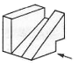
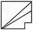
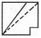
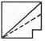
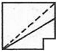
(정답률: 78%)
56. 일반적으로 치수선을 표시할 때, 치수선 양 끝에 치수가 끝나는 부분임을 나타내는 형상으로 사용하는 것이 아닌 것은?
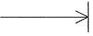
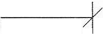
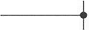
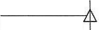
(정답률: 52%)
57. 도면의 표제란에 표시된 “NS"의 의미로 적절한 것은?
- 나사를 표시
- 비례척이 아닌 것을 표시
- 각도를 표시
- 보통나사를 표시
(정답률: 74%)
58. 도면에 나사가 M10×1.5-6g로 표시되어 있을 경우 나사의 해독으로 가장 올바른 것은?
- 한줄 왼나사 호칭경 10㎜이고, 피치가 1.5㎜이며 등급은 6g 이다.
- 한줄 오른나사 호칭경 10㎜이고, 피치가 1.5㎜이며 등급은 6g 이다.
- 한줄 오른나사 호칭경 10㎜이고, 피치가 1.5㎜에서 6㎜중 하나면 된다.
- 줄수와 나사 감김방향은 알 수가 없고 미터나사 10㎜짜리로 피치는 1.5㎜×6㎜이다.
(정답률: 58%)
59. 그림과 같은 입체도에서 화살표 방향이 정면일 때 제 3각법으로 제도한 것으로 올바른 것은? (단, 정면을 기준으로 좌우 대칭 형상이다.)
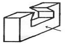
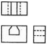
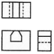
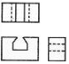
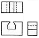
(정답률: 77%)
60. 그림과 같이 구조물의 부재 등에서 절단할 곳의 전후를 끊어서 90° 회전하여 그 사이에 단면 형상을 표시하는 단면도는?
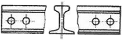
- 부분 단면도
- 한쪽 단면도
- 회전 도시 단면도
- 조합 단면도
(정답률: 79%)